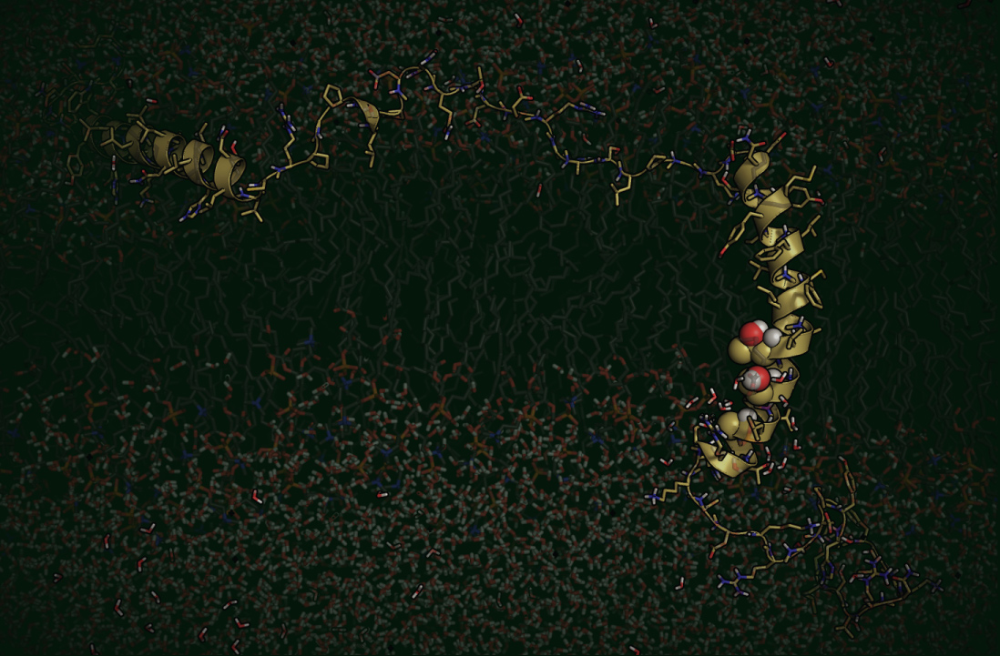
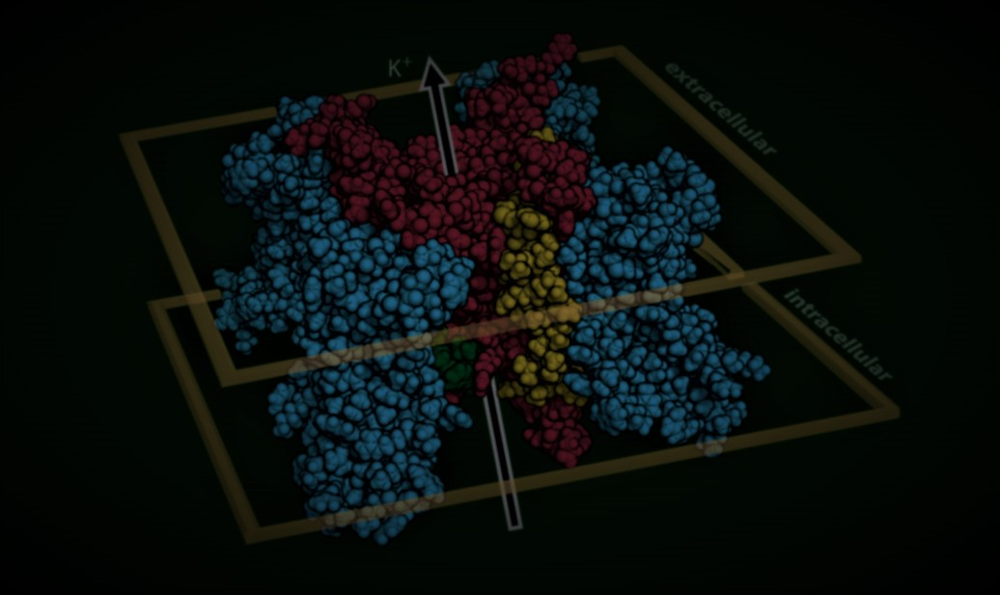
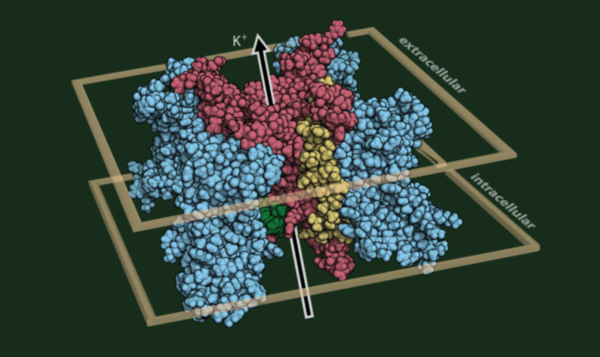

What is the significance of genetic variants to those that carry them?

What is the significance of genetic variants to those that carry them?

Can protein structure inform the significance of genetic variants?

What degree of functional perturbation is tolerated and how much is too much?
How do we determine the significance of genetic variants?
We are driven to understand how genetics shapes an individual's risk for disease or adverse outcomes. The Kroncke Lab pairs high-throughput functional assays, CRISPR-edited stem-cell models, protein structure, and Bayesian statistical modeling to estimate how genetic variants influence disease penetrance — replacing binary “pathogenic / benign” labels with calibrated, individualized risk. We build an open-source pipeline that mines the literature with large language models, aggregates predictive features, and folds in 3D structural priors to clarify variants of uncertain significance in cardiac arrhythmia genes such as KCNH2 and SCN5A — and we are now extending the same framework to atrial fibrillation.
See this talk on YouTube for an overview of our research program.
What is our progress to date?
Above is a video highlighting an intersection of protein structure and clinical presentation, in this case for the sodium ion channel Nav1.5 (gene SCN5A). Variants associated with Brugada syndrome (BrS1, blue), type 3 long QT syndrome (LQT3, red), or unaffected carriers (gold) are shown as spheres. This representation suggests the utility of using structure and residue annotation to understand mechanism and generate predictions about yet uncharacterized variants found in structured regions.
Recent work spans the most comprehensive variant-effect map to date for KCNH2/Kv11.1 by deep mutational scanning, quantitative proteomics of Kv11.1 trafficking under elevated QT polygenic risk in iPSC-cardiomyocytes (2026), and survival modeling of breakthrough cardiac events in KCNH2 carriers on beta-blockers. Our patented Bayesian Method to Estimate Variant-Induced Disease Penetrance (US-20220406461-A1) and the VariantBrowser.org portal translate these insights into tools clinicians and researchers rely on.
Integrating genetics, quantitative models, and high-throughput biology
What we are working on now
Large-language-model pipelines mine PubMed for variant, phenotype, and carrier evidence, then a multi-model consensus scores gene–disease validity against the ClinGen SOP.
We unify AlphaMissense, REVEL, CADD, ClinVar, and gnomAD into one queryable resource, so every variant carries the same panel of evidence.
AlphaFold models and elastic-network analysis place variants in 3D, letting pathogenic neighborhoods inform priors for nearby variants of uncertain significance.
A probabilistic model fuses carrier counts, predictive features, and structural priors into penetrance estimates with full uncertainty — our patented framework.
Deep mutational scanning and automated patch clamp measure variant effects at scale, including the most complete KCNH2/Kv11.1 map to date.
CRISPR-edited iPSC-cardiomyocytes test how polygenic background shifts expressivity, and survival models flag breakthrough cardiac events despite beta-blocker therapy.

What can help you determine the significance of genetic variants?
A list of useful resources for those trying to determine the significance of genetic variants.
Who does this work?
Current and past group members